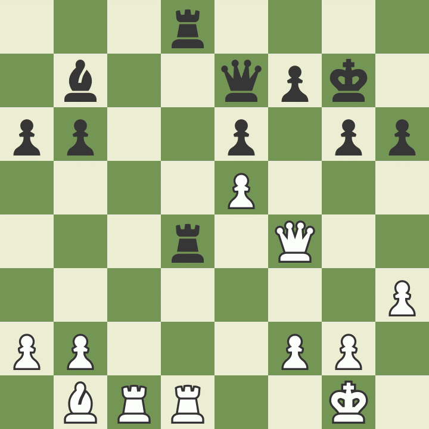
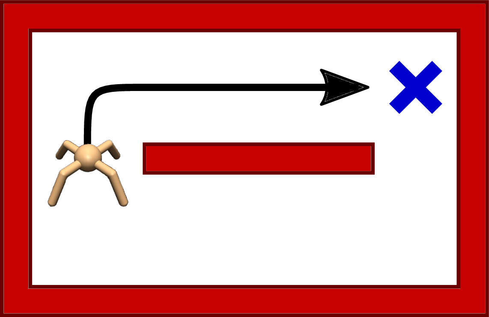
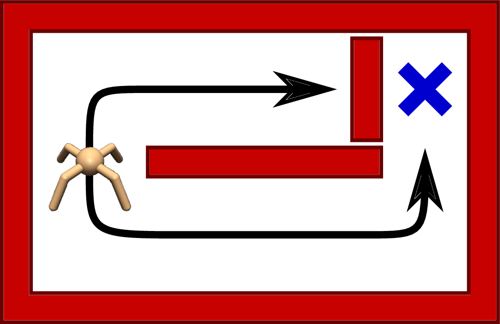
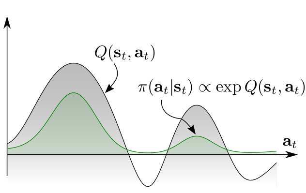
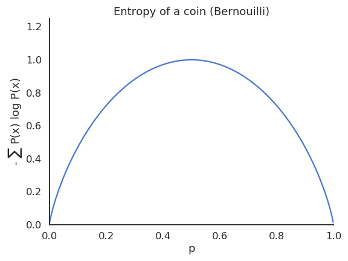
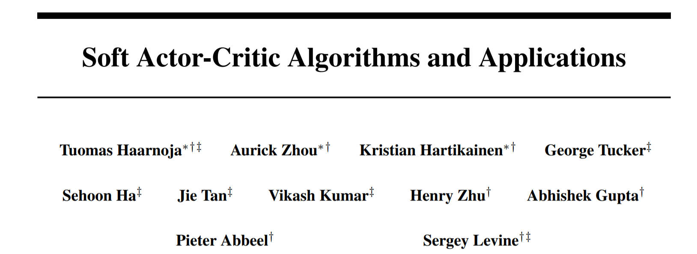
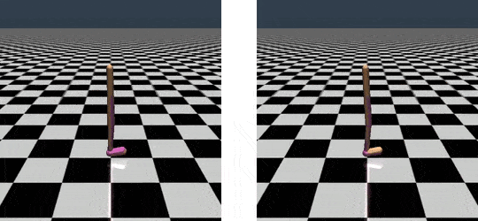
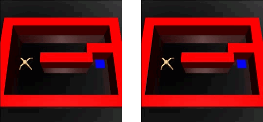
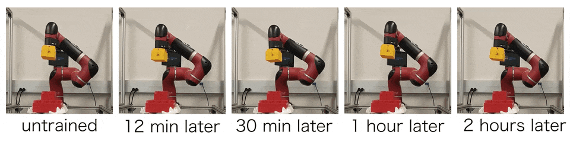

Soft Actor-Critic
Maximum Entropy RL and SAC
1 - Maximum Entropy RL
Hard RL
- All methods seen so far search the optimal policy that maximizes the return:
\[\pi^* = \text{arg} \max_\pi \, \mathbb{E}_{\pi} [ \sum_t \gamma^t \, r(s_t, a_t, s_{t+1}) ]\]
- The optimal policy is deterministic and greedy by definition.
\[\pi^*(s) = \text{arg} \max_a Q^*(s, a)\]
Exploration is ensured externally by :
applying \(\epsilon\)-greedy or softmax on the Q-values (DQN),
adding exploratory noise (DDPG),
learning stochastic policies that become deterministic over time (A3C, PPO).
Is “hard” RL, caring only about exploitation, always the best option?
Need for soft RL

The optimal policy is only greedy for a MDP, not obligatorily for a POMDP.
Games like chess are POMDPs: you do not know what your opponent is going to play (missing information).
If you always play the same moves (e.g. opening moves), your opponent will adapt and you will end up losing systematically.
Variety in playing is beneficial in POMDPs: it can counteract the uncertainty about the environment.
Need for soft RL
There are sometimes more than one way to collect rewards, especially with sparse rewards.
If exploration decreases too soon, the RL agent will “overfit” one of the paths.
If one of the paths is suddenly blocked, the agent would have to completely re-learn its policy.
It would be more efficient if the agent had learned all possibles paths, even if some of them are less optimal.


Soft policies
- Softmax policies allow to learn multimodal policies, but only for discrete action spaces.
\[ \pi(s, a) = \frac{\exp Q(s, a) / \tau}{ \sum_b \exp Q(s, b) / \tau} \]
Continuous Gaussian policies are still unimodal policies: they mostly sample actions around the mean \(\mu_\theta(s)\) and the variance \(\sigma_\theta(s)\) decreases to 0 with learning.
If we want a multimodal policy that learns different solutions, we would need to learn a softmax distribution (Gibbs / Boltzmann) over the continuous action space: untractable


Maximum Entropy RL
A solution to force the policy to be multimodal is to force it to be as stochastic as possible by maximizing its entropy.
Instead of searching for the policy that “only” maximizes the returns:
\[ \pi^* = \text{arg} \max_\pi \, \mathbb{E}_{\pi} [ \sum_t \gamma^t \, r(s_t, a_t, s_{t+1}) ] \]
we search for the policy that maximizes the returns while being as stochastic as possible:
\[ \pi^* = \text{arg} \max_\pi \, \mathbb{E}_{\pi} [ \sum_t \gamma^t \, r(s_t, a_t, s_{t+1}) + \alpha \, H(\pi(s_t))] \]
This new objective function defines the maximum entropy RL framework.
The entropy of the policy regularizes the objective function: the policy should still maximize the returns, but stay as stochastic as possible depending on the parameter \(\alpha\).
Entropy regularization can always be added to PG methods such as A3C.
It is always possible to fall back to hard RL by setting \(\alpha\) to 0.
Entropy of a policy
- The entropy of a policy in a state \(s_t\) is defined by the expected negative log-likelihood of the policy:
\[H(\pi_\theta(s_t)) = \mathbb{E}_{a \sim \pi_\theta(s_t)} [- \log \pi_\theta(s_t, a)]\]
- For a discrete action space:
\[ H(\pi_\theta(s_t)) = - \sum_a \pi_\theta(s_t, a) \, \log \pi_\theta(s_t, a) \]
- For a continuous action space:
\[ H(\pi_\theta(s_t)) = - \int_a \pi_\theta(s_t, a) \, \log \pi_\theta(s_t, a) \, da \]
- The entropy necessitates to sum or integrate the self-information of each possible action in a given state.

Entropy of a policy
- A deterministic (greedy) policy has zero entropy, the same action is always taken: exploitation.
- A random policy has a high entropy, you cannot predict which action will be taken: exploration.

- Maximum entropy RL embeds the exploration-exploitation trade-off inside the objective function instead of relying on external mechanisms such as the softmax temperature.
Soft Q-learning
- In soft Q-learning, the objective function is defined over complete trajectories:
\[ \mathcal{J}(\theta) = \sum_t \gamma^t \, \mathbb{E}_{\pi} [ r(s_t, a_t, s_{t+1}) + \alpha \, H(\pi(s_t))] \]
- The goal of the agent is to generate trajectories associated with a lot of rewards (high return) but only visiting states with a high entropy, i.e. where the policy is random (exploration).
The agent can decide how the trade-off is solved via regularization:
If a single action leads to high rewards, the policy may become deterministic.
If several actions lead to equivalent rewards, the policy must stay stochastic.

Soft Q-learning
- In soft Q-learning, the policy is implemented as a softmax over soft Q-values:
\[ \pi_\theta(s, a) = \dfrac{\exp \dfrac{Q^\text{soft}_\theta (s, a)}{\alpha}}{\sum_b \exp \dfrac{Q^\text{soft}_\theta (s, b)}{\alpha}} \propto \exp \dfrac{Q^\text{soft}_\theta (s, a)}{\alpha} \]
- \(\alpha\) plays the role of the softmax temperature parameter \(\tau\).
Soft Q-learning belongs to energy-based models, as \(-\dfrac{Q^\text{soft}_\theta (s, a)}{\alpha}\) represents the energy of the Boltzmann distribution (see restricted Boltzmann machines).
The partition function \(\sum_b \exp \dfrac{Q^\text{soft}_\theta (s, b)}{\alpha}\) is untractable for continuous action spaces, as one would need to integrate over the whole action space, but it will disappear from the equations anyway.
What are soft values?
- Soft V and Q values are the equivalent of the hard value functions, but for the new objective:
\[ \mathcal{J}(\theta) = \sum_t \gamma^t \, \mathbb{E}_{\pi} [ r(s_t, a_t, s_{t+1}) + \alpha \, H(\pi(s_t))] \]
- The soft value of an action depends on the immediate reward and the soft value of the next state (soft Bellman equation):
\[ Q^\text{soft}_\theta(s_t, a_t) = \mathbb{E}_{s_{t+1} \in \rho_\theta} [r(s_t, a_t, s_{t+1}) + \gamma \, V^\text{soft}_\theta(s_{t+1})] \]
- The soft value of a state is the expected value over the available actions plus the entropy of the policy.
\[ V^\text{soft}_\theta(s_t) = \mathbb{E}_{a_{t} \in \pi} [Q^\text{soft}_\theta(s_{t}, a_{t})] + H(\pi_\theta(s_t)) = \mathbb{E}_{a_{t} \in \pi} [Q^\text{soft}_\theta(s_{t}, a_{t}) - \log \, \pi_\theta(s_t, a_t)] \]
Haarnoja et al (2017) showed that these soft value functions are the solution of the entropy-regularized objective function.
All we need is to be able to estimate them… Soft Q-learning uses complex optimization methods (variational inference) to do it, but SAC is more practical.
2 - Soft Actor-Critic (SAC)

Soft Actor-Critic (SAC)
- Putting these equations together:
\[ Q^\text{soft}_\theta(s_t, a_t) = \mathbb{E}_{s_{t+1} \in \rho_\theta} [r(s_t, a_t, s_{t+1}) + \gamma \, V^\text{soft}_\theta(s_{t+1})] \]
\[ V^\text{soft}_\theta(s_t) = \mathbb{E}_{a_{t} \in \pi} [Q^\text{soft}_\theta(s_{t}, a_{t}) - \log \, \pi_\theta(s_t, a_t)] \]
we obtain:
\[ Q^\text{soft}_\theta(s_t, a_t) = \mathbb{E}_{s_{t+1} \in \rho_\theta} [r(s_t, a_t, s_{t+1}) + \gamma \, \mathbb{E}_{a_{t+1} \in \pi} [Q^\text{soft}_\theta(s_{t+1}, a_{t+1}) - \log \, \pi_\theta(s_{t+1}, a_{t+1})]] \]
- If we want to train a critic \(Q_\varphi(s, a)\) to estimate the true soft Q-value of an action \(Q^\text{soft}_\theta(s, a)\), we just need to sample \((s_t, a_t, r_{t+1}, a_{t+1})\) transitions and minimize:
\[ \mathcal{L}(\varphi) = \mathbb{E}_{s_t, a_t, s_{t+1} \sim \rho_\theta} [(r_{t+1} + \gamma \, Q_\varphi(s_{t+1}, a_{t+1}) - \log \pi_\theta(s_{t+1}, a_{t+1}) - Q_\varphi(s_{t}, a_{t}) )^2] \]
The only difference with a SARSA critic is that the negative log-likelihood of the next action is added to the target.
In practice, \(s_t\), \(a_t\) and \(r_{t+1}\) can come from a replay buffer, but \(a_{t+1}\) has to be sampled from the current policy \(\pi_\theta\) (but not taken!).
SAC is therefore an off-policy actor-critic algorithm, but with stochastic policies!
Soft Actor-Critic (SAC)
- But how do we train the actor? The policy is defined by a softmax over the soft Q-values, but the log-partition \(Z\) is untractable for continuous spaces:
\[ \pi_\theta(s, a) = \dfrac{\exp \dfrac{Q_\varphi (s, a)}{\alpha}}{\sum_b \exp \dfrac{Q_\varphi (s, b)}{\alpha}} = \dfrac{1}{Z} \, \exp \dfrac{Q_\varphi (s, a)}{\alpha} \]
- The trick is to make the parameterized actor \(\pi_\theta\) learn to be close from this softmax, by minimizing the KL divergence:
\[ \mathcal{L}(\theta) = D_\text{KL} (\pi_\theta(s, a) || \dfrac{1}{Z} \, \exp \dfrac{Q_\varphi (s, a)}{\alpha}) = \mathbb{E}_{s, a \sim \pi_\theta(s, a)} [- \log \dfrac{\dfrac{1}{Z} \, \exp \dfrac{Q_\varphi (s, a)}{\alpha}}{\pi_\theta(s, a)}] \]
- As \(Z\) does not depend on \(\theta\), it will automagically disappear when taking the gradient!
\[ \nabla_\theta \, \mathcal{L}(\theta) = \mathbb{E}_{s, a} [\alpha \, \nabla_\theta \log \pi_\theta(s, a) - Q_\varphi (s, a)] \]
- So the actor just has to implement a Gaussian policy and we can train it using soft-Q-value.
Soft Actor-Critic (SAC)
- Soft Actor-Critic (SAC) is an off-policy actor-critic architecture for maximum entropy RL:
\[ \mathcal{J}(\theta) = \sum_t \gamma^t \, \mathbb{E}_{\pi} [ r(s_t, a_t, s_{t+1}) + \alpha \, H(\pi(s_t))] \]
Maximizing the entropy of the policy ensures an efficient exploration. It is even possible to learn the value of the parameter \(\alpha\).
The critic learns to estimate soft Q-values that take the entropy of the policy into account:
\[ \mathcal{L}(\varphi) = \mathbb{E}_{s_t, a_t, s_{t+1} \sim \rho_\theta} [(r_{t+1} + \gamma \, Q_\varphi(s_{t+1}, a_{t+1}) - \log \pi_\theta(s_{t+1}, a_{t+1}) - Q_\varphi(s_{t}, a_{t}) )^2] \]
- The actor learns a Gaussian policy that becomes close to a softmax over the soft Q-values:
\[ \pi_\theta(s, a) \propto \exp \dfrac{Q_\varphi (s, a)}{\alpha} \]
\[ \nabla_\theta \, \mathcal{L}(\theta) = \mathbb{E}_{s, a} [\alpha \, \nabla_\theta \log \pi_\theta(s, a) - Q_\varphi (s, a)] \]
SAC vs. TD3
In practice, SAC uses clipped double learning like TD3: it takes the lesser of two evils between two critics \(Q_{\varphi_1}\) and \(Q_{\varphi_2}\).
The next action \(a_{t+1}\) comes from the current policy, no need for target networks.
Unlike TD3, the learned policy is stochastic: no need for target noise as the targets are already stochastic.
See https://spinningup.openai.com/en/latest/algorithms/sac.html for a detailed comparison of SAC and TD3.
The initial version of SAC additionally learned a soft V-value critic, but this turns out not to be needed.

SAC results
- The enhanced exploration strategy through maximum entropy RL allows to learn robust and varied strategies that can cope with changes in the environment.


Real-world robotics
- The low sample complexity of SAC allows to train a real-world robot in less than 2 hours!
Real-world robotics
- Although trained on a flat surface, the rich learned stochastic policy can generalize to complex terrains.
Real-world robotics
- When trained to stack lego bricks, the robotic arm learns to explore the whole state-action space.

- This makes it more robust to external perturbations after training: